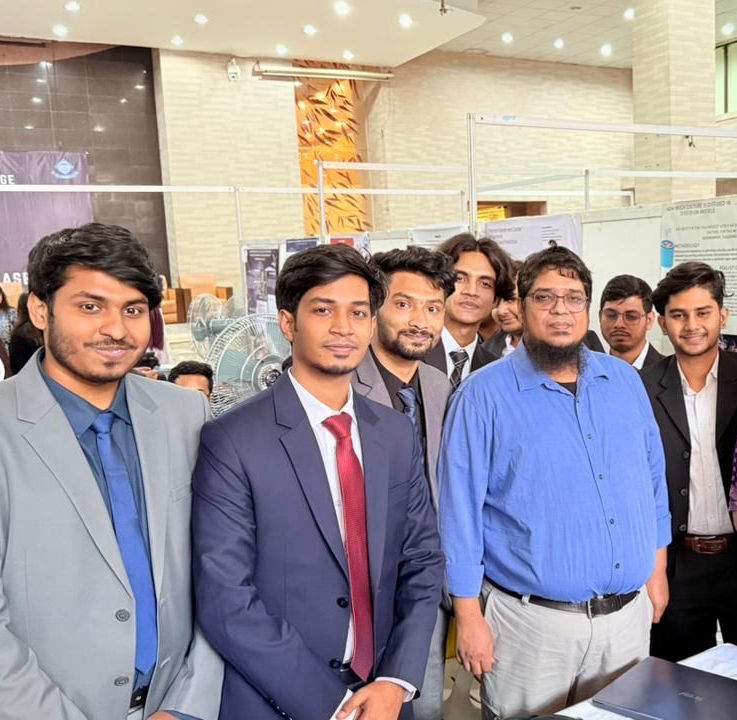

Hi, I'm Md Abul Kashem Junaid.
AI Engineer based in Dhaka, Bangladesh. I turn language models into reliable products: retrieval pipelines, agentic workflows and document intelligence, shipped with an AI-native workflow.
About
I'm an AI Engineer with hands-on experience building production LLM applications: retrieval-augmented generation, code intelligence, fine-tuning and identity-verification pipelines. I work mostly in Python with FastAPI, vector databases and LangGraph.
I'm fluent in AI-assisted development. I use tools like Claude Code and Claude Design to design, build and ship faster without compromising quality. Recently I redesigned and built the frontend of an AI study app end to end.
Experience
AI-Native Developer · NeuronFish, Inc.
Oct 2026 – Present · Remote- Redesigned the entire frontend of Dikkha AI (SSC 2027 relaunch), an AI study app for Class 9–10 students, using Claude Code and Claude Design.
- Created the new visual identity (mascot, 12 avatars, design system) with Claude Design and rebuilt the Flutter UI on it.
- Built the first-run flow: animated onboarding, student setup (learning-style quiz, study load) and rewards, with accessibility tests.
- Built core features: push notifications, Practice with AI-marked photo answers, timed Model Tests and a streaming AI chat tutor.
- Added the app shell (offline handling, loading states, deep links) and integrated all features, with 1,200+ passing tests.
AI Developer · Ztrios Technologies Ltd.
Sep 2025 – Jun 2026 · Dhaka- Built a production Bengali Physics RAG system with FastAPI, Weaviate and Google Gemini, using hybrid (vector + keyword) search for source-grounded question answering.
- Developed a code intelligence Q&A system using Tree-sitter AST parsing, LanceDB, Redis and LLMs, with HyDE query expansion and cross-encoder re-ranking; validated on 4 codebases of 100–150 files each.
- Fine-tuned Qwen-family language models on 60M tokens for tax-domain applications; built pipelines for data processing, embedding generation and knowledge retrieval.
- Built an end-to-end Bangladesh NID identity verification pipeline (no database lookup) combining barcode detection, multi-engine decoding, OCR, MRZ parsing and cross-validation, achieving 90% identity matching accuracy.
Projects
arXiv Agentic RAG Research Platform
A five-layer agentic RAG service over arXiv papers, from LaTeX ingestion to a FastAPI API. A LangGraph router classifies each question (factual, comparison, contradiction-prone) and decomposes it into sub-queries. Retrieval is hybrid: BAAI/bge-m3 dense and sparse search fused with RRF, retried with a reformulated query when similarity is low. Answers are source-grounded, with contradiction detection, consensus classification and citation traceability, and ship with Docker Compose.
Multi-Agent Research Platform
A LangGraph multi-agent system with orchestrator, researcher, critic and analyst roles and intent-based routing. A critic layer detects inconsistencies and assigns confidence scores to source-grounded web research.
Document Intelligence for Blurry & Noisy Scans
An end-to-end pipeline built around DeepSeek-OCR: scanned PDFs and images become clean markdown, are chunked and indexed for semantic retrieval, then used to generate evidence-grounded drafts.
Image-to-Image RAG for Fashion
A two-stage fashion search: CLIP indexing with attribute extraction, then FAISS retrieval with metadata-aware re-ranking by colour, category and style.
Electrical Wiring Fault Detection
YOLOv8 object detectors tuned over four iterations to find 5 wiring fault classes (burnt, short circuit, overloaded, disconnected, normal), reaching 0.89 precision and 0.70 mAP@0.5.
Life Expectancy Prediction
Compared six ML models on 2,864 records; Random Forest performed best with R² 0.996, then deployed with Flask.
Email Classification Agent
A LangGraph agent that classifies and prioritizes incoming emails with an LLM, with a live Streamlit triage dashboard. Runs with Docker Compose.
Company Policy Agentic RAG Assistant
An agentic RAG assistant that answers questions on company rules, policies and procedures from vector embeddings, via a web UI or CLI.
Agentic RAG for Legal Documents
A conversational LangGraph agent that decides when to retrieve and when to answer directly, answering questions on the Income Tax Act 2023 with ChromaDB search and chat history.
Local OCR Dynamic RAG System
A PDF RAG system with hybrid pypdf + EasyOCR extraction, chunking and embeddings, with metadata filtering by filename, upload date and page.
AI meets Law: Penal Code RAG
A RAG chatbot that classifies and explains activities under the Penal Code (1860), using dense retrieval and a Gemma 2B model for response generation.
PDF to Audiobook Converter
Converts PDFs into natural-sounding MP3 audiobooks with text cleaning, multilingual text-to-speech (English and Bengali) and OCR for scanned documents.
Skills
languages
llms & genai
frameworks & libraries
vector dbs & data
vision / ocr
backend & devops
os
Education
B.Sc. in Computer Science and Engineering
North South University, Dhaka · Jul 2020 – Mar 2025
Higher Secondary School Certificate
Dhaka Imperial College, Dhaka · 2017 – 2019

Presenting my final-year project at North South University
With my supervisor, Dr. Mohammad Ashrafuzzaman Khan, Associate Professor, at the capstone showcase. Our project, AI meets Law: Legal vs Illegal Activity Detection, is a RAG system over the Penal Code (1860).
View the projectContact me
from langgraph.graph import StateGraph def build_agent(): g = StateGraph(State) g.add_node("retrieve", retrieve) g.add_node("answer", answer) g.add_edge("retrieve", "answer") return g.compile()
Dhaka, Bangladesh